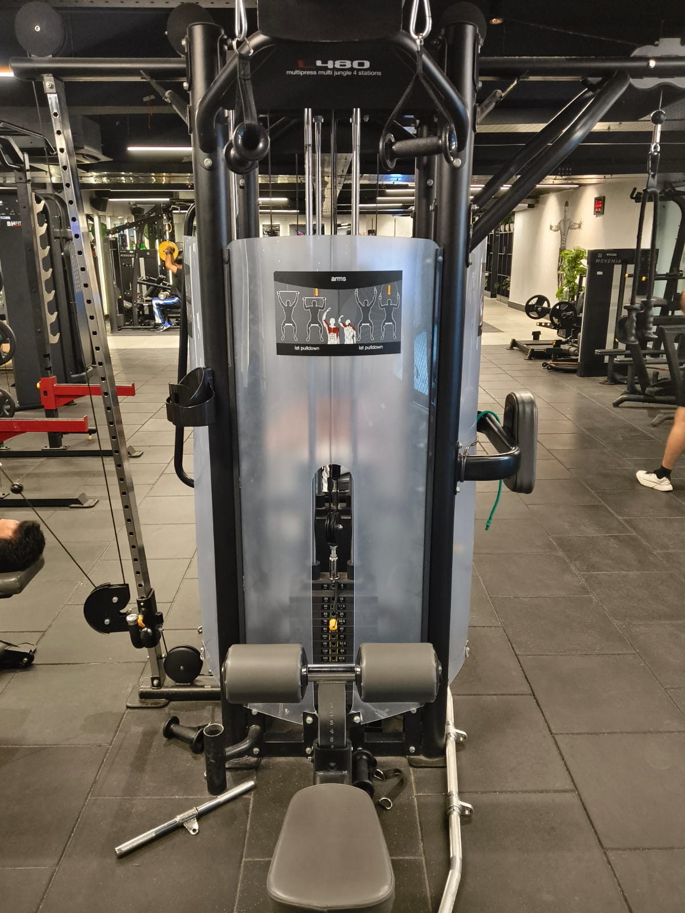
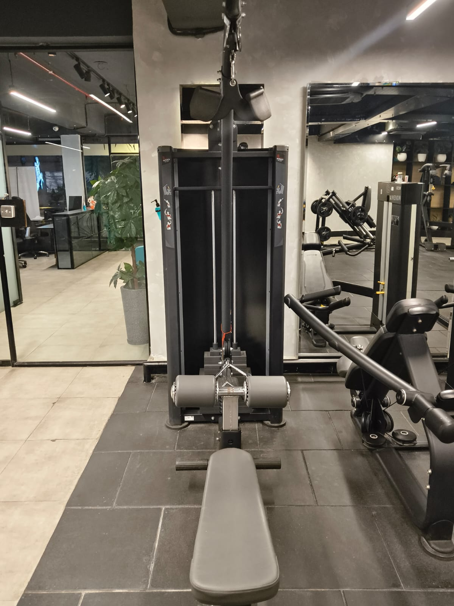
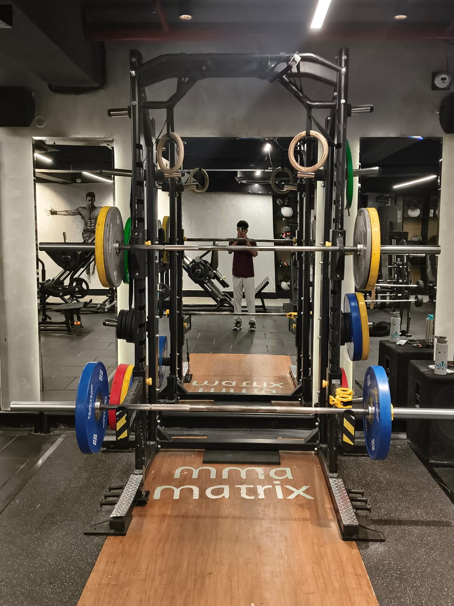

Lat Pulldown Machine
Primary: Latissimus Dorsi · Secondary: Biceps, Rear Delts
How to perform
- 1Sit and secure thighs under the pad. Grip bar wider than shoulder width.
- 2Lean back slightly (15°). Pull the bar down to your upper chest.
- 3Drive elbows down and back — think of putting them in your pockets.
- 4Let the bar rise slowly until arms are fully extended. Stretch the lats.
Recommended
4 Sets × 10–12 Reps

Seated Cable Row
Primary: Mid Trapezius, Rhomboids · Secondary: Lats, Biceps
How to perform
- 1Sit with feet on the platform, knees slightly bent. Grab the V-bar.
- 2Start with arms fully extended, back straight — not hunched.
- 3Pull the handle to your lower abdomen. Squeeze shoulder blades together.
- 4Extend arms back out slowly. Keep torso upright — minimal rocking.
Recommended
4 Sets × 10–12 Reps

Deadlift
Primary: Latissimus Dorsi · Secondary: Biceps, Core
How to perform
- 1Set the counterweight (higher weight = easier). Kneel on the pad.
- 2Grip the bar wide (pull-up) or narrow/neutral (chin-up).
- 3Pull your chest up toward the bar. Drive elbows down to your sides.
- 4Lower slowly until arms are fully extended. Do not drop fast.
Recommended
3 Sets × 8–10 Reps